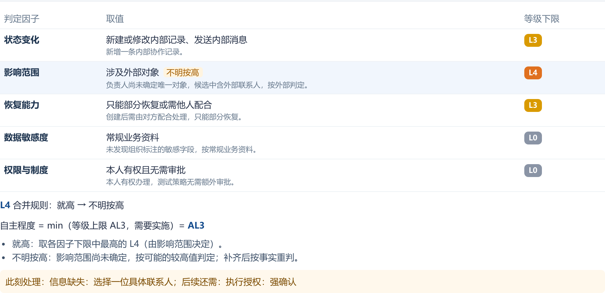
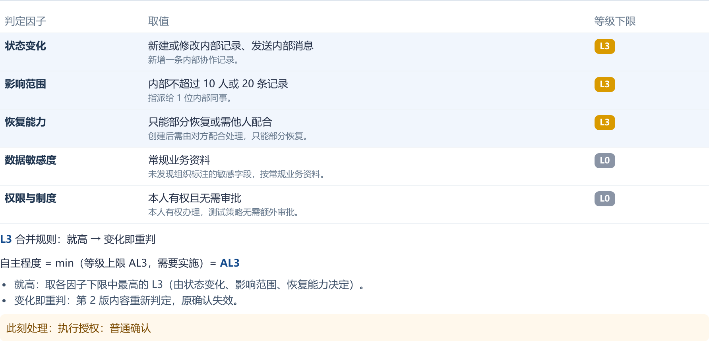

图 16
Demo 3 澄清后重判：“交给王工”从 L4 降到 L3
案例 C06 · 不明按高 → 变化即重判
L4
澄清前：三位“王工”，其中一位在外部

选定
研发组王工
→
L3
澄清后：内部 1 人，按事实重判

1
不明按高
影响范围未知时按外部判定，并标出“不明按高”
2
一次只问一件
先问“是哪位王工”，界面同时提示“后续还需：强确认”
3
重判且旧确认失效
选定后第 2 版重新判定为 L3，只需普通确认